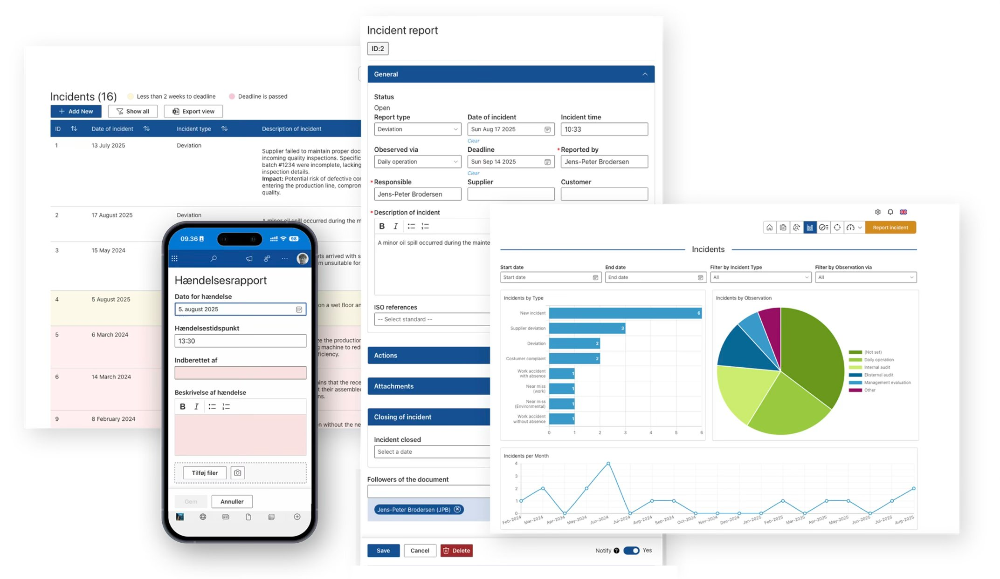
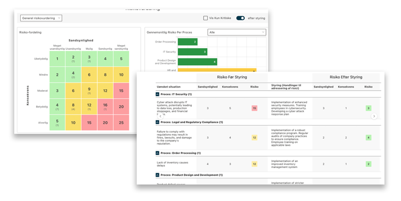
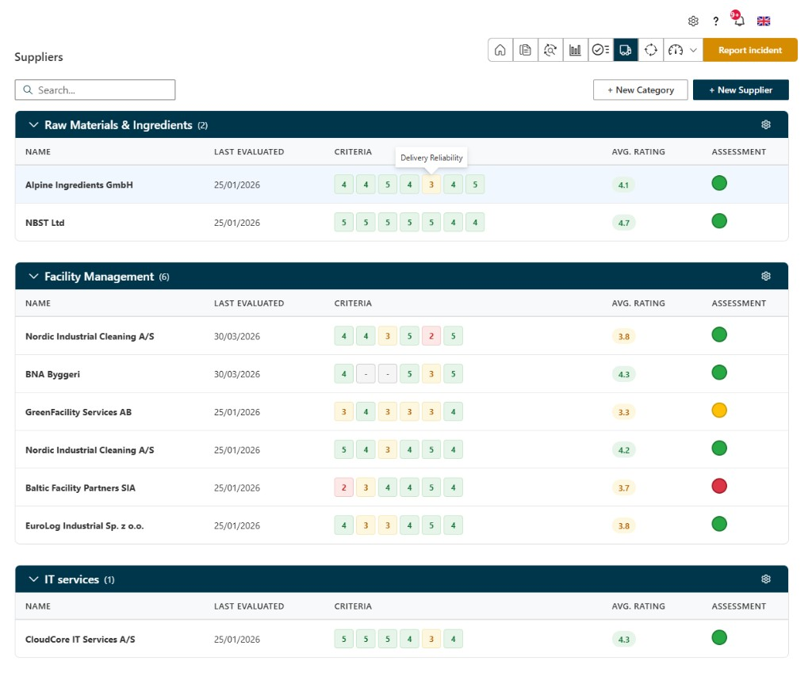

BMF Systems
Produktudvikler · SharePoint / M365
Modulært ISO-ledelsessystem i kundens eget SharePoint. Jeg var eneste udvikler på produktet i to år.
Hvad BMF er
BMF Systems er et komplet ISO-ledelsessystem, der installeres direkte i kundens eget SharePoint. Data, brugere og rettigheder bliver i deres Microsoft 365-tenant i stedet for en separat hosted løsning. Produktet er modulært, så hver organisation kun aktiverer de dele, de har brug for inden for kvalitet, miljø eller arbejdsmiljø.
Hvad produktet dækker
Hændelsesindberetning og -håndtering, risikovurdering, procesdokumenter med versionering og godkendelsesflow, auditprogrammer og auditrapporter, tilpassede tjeklister og skemaer, leverandørevaluering, ISO-referencer på tværs af systemet, og et overbliks-dashboard. Kunder kan også aktivere en Azure Function i deres tenant, som læser notifikationsstatus fra SharePoint og sender mail, når brugere skal reagere på noget i BMF.
Min rolle
Jeg arbejdede som produktudvikler og support. Kunder kom med problemer og forslag til forbedringer. Jeg løste det jeg kunne med det samme og bragte gentagne temaer med til produktmøder. Med stakeholders aftalte jeg hvad der skulle prioriteres til næste release, og implementerede det bagefter. De sidste to år var jeg eneste udvikler på BMF og stod for det der blev udgivet.
Produktbilleder


